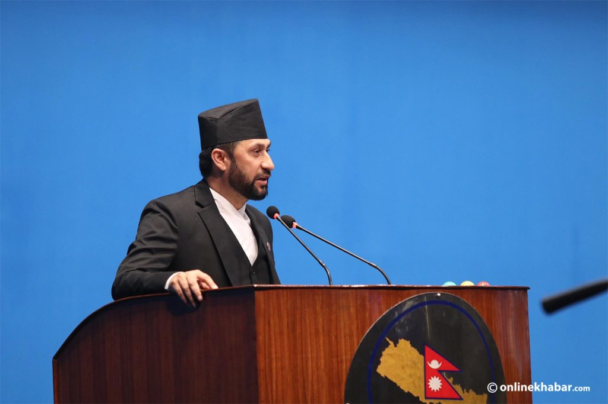

Lamichhane defends himself in Parliament, alleges corruption among Congress leaders 
Kathmandu, May 20
Deputy Prime Minister and Home Minister Rabi Lamichhane, who has been demanding an opportunity to answer the allegations against him in the House of Representatives for two months, finally got a chance to speak on Sunday. Addressing the House for about 40 minutes, he questioned those who had accused him more than he addressed the questions raised against him. On March 4, after the power dynamics shifted with the Congress and Maoist Centre, the Chairperson of the Rastriya Swatantra Party, Lamichhane, became the Home Minister on March 6. Following his appointment, the Congress obstructed Parliament, demanding the formation of a parliamentary inquiry committee, alleging Lamichhane’s involvement in the misappropriation of cooperative funds. Since March 15, the Congress had been preventing Lamichhane from addressing the House of Representatives. After the Congress agreed on Sunday, Lamichhane spoke in Parliament, claiming that state agencies had neither investigated nor prosecuted him. “There is no case in court regarding the cooperative. I have repeatedly said there is no defendant. I have not been hurt by anyone’s statement,” said Home Minister Lamichhane. He claimed he was neither the owner nor a cooperative member. After the accusations were made against him, he wrote a letter to the Office of the Attorney General of Nepal to clarify the matter and received a response stating that there was no case or accusation against him. He argued that there should not be a parliamentary investigation against him based solely on media reports. |